02 — Nuroy Reaktor-Prototyp
Scroll ↓
Deshalb haben wir Nuroy gebaut: Custom Dashboards, KI-Integration und Software — für Unternehmen, die das ernst nehmen.
Daten aus allen Tools an einem Ort. Live. Übersichtlich. Auf eure KPIs zugeschnitten.
Mehr erfahrenWorkflows automatisieren. KI-Agenten für Vertrieb, Support und interne Prozesse.
Mehr erfahrenSaaS-Produkte, interne Tools, Kunden-Plattformen. Von der Idee bis zum Live-Betrieb.
Mehr erfahrenLead-Scoring, Churn-Prediction, Sentiment-Analyse – direkt in euren Tools.
Mehr erfahrenEuer eigener KI-Assistent. Trainiert auf eure Dokumente, Prozesse und euer Wissen.
Mehr erfahrenDatensilos auflösen. Alle Quellen synchronisieren. Ein Data Warehouse für alles.
Mehr erfahrenKundenstimmen



Arbeiten
Prozess
Kostenloses Erstgespräch, unverbindlich. Du erzählst, wo's hakt. Wir sagen dir ehrlich, ob wir die Richtigen sind.
Wir gehen tief rein: Prozesse, Engpässe, Ziele. Wir verstehen, was du wirklich brauchst. Nicht, was du glaubst zu brauchen.
Stack, Schnittstellen und Systemgrenzen stehen, bevor wir eine Zeile schreiben. Klarer Scope, klarer Preis.
Sauberer Code, echte Releases, planbare Sprints. Kein Overhead, kein Bullshit. Wöchentliche Übergaben.
Wir gehen nicht nach dem Launch. Monitoring, Incident-Response, Weiterentwicklung. Wir bleiben das Team, das dein System kennt.
Das Team
Strategie · Sales · Business Development
Verantwortlich für Kunden, Projekte und die strategische Ausrichtung. Übersetzt Geschäftsziele in technische Roadmaps.
Automation · System Architecture · Low-Code
Baut Prozesse, die alleine laufen. Von n8n-Workflows bis zur vollständigen API-Orchestrierung — denkt in Systemen.
Software Engineering · Backend · Integration
Schreibt den Code, auf dem das Ganze läuft. Skalierbare Backends, solide Datenarchitekturen, Integrationen, die halten.
FAQ
Ein MVP oder ein klares internes Tool schaffen wir in 6–12 Wochen bis zur Erstversion. Komplexere Systeme planen wir in der Architektur-Phase gemeinsam. Du bekommst eine ehrliche Einschätzung nach dem Erstgespräch.
Ja — remote-first ist bei uns Überzeugung. Wir arbeiten mit DACH-Kunden über Videokonferenz und klare Übergabe-Strukturen. Vor-Ort-Tage sind für Discovery-Workshops planbar.
Nichts. 45–60 Minuten über deine Ausgangssituation und was du konkret brauchst. Wenn es passt, folgt ein Angebot — wenn nicht, sagen wir das direkt.
Ja — Managed Tech ist eines unserer wichtigsten Angebote. Betrieb, Monitoring, Incident-Response und Weiterentwicklung. Wir bleiben das Team, das das System kennt.
Lass uns bauen.
Erstgespräch buchen